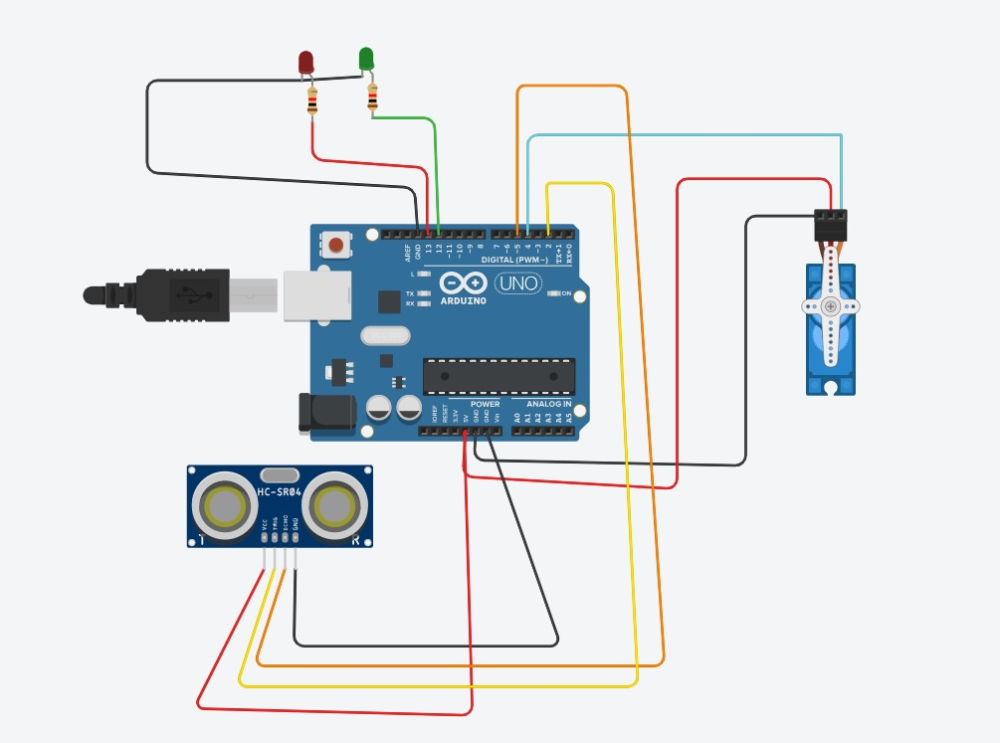

My Projects

Portfolio Website
Developed a personal portfolio website to showcase projects, skills, and experiences. Features
include:
- Project showcase with images and descriptions.
- Interactive elements like project filtering and image sliders.
- Clean and professional design highlighting personal branding and skills.

Shopping Website
Created a functional and visually appealing shopping website for browsing and purchasing products.
Features include:
- Product listings with images, descriptions, and prices.
- Enhanced user experience with interactivity and animations.
- Interactive shopping cart.

Smart Handwash Dispenser
Developed a smart handwash dispenser to promote hygiene by minimizing physical contact. Features
include:
- Touchless operation for improved hygiene.
- Controlled and consistent soap dispensing.
- Energy-efficient design, user-friendly, and easily maintainable.